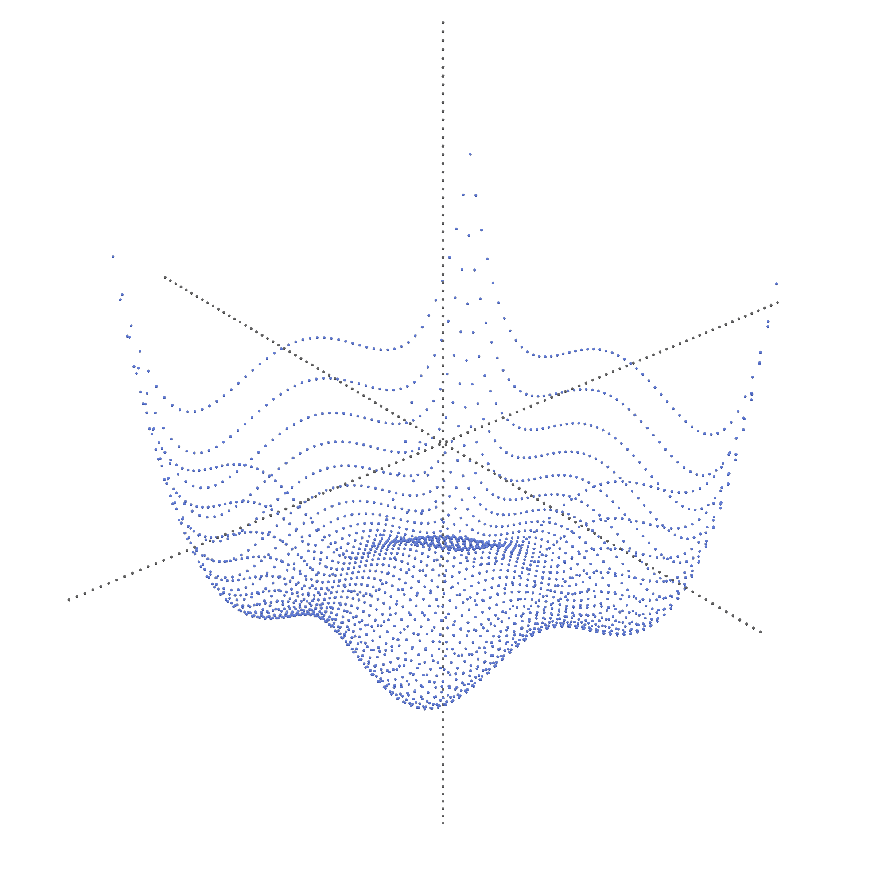

About
I am a PhD student in mathematics at Centre Borelli — École Normale Paris-Saclay since 2023, under the supervision of Nicolas Vayatis and Argyris Kalogeratos.
I study and design global optimization algorithms, especially those modeled as systems of stochastic differential equations. I am also particularly interested in measure theory and in the formalization of optimization algorithms and their results using the L∃∀N proof assistant. I contribute to Mathlib, its mathematics library.
Contact
- Email: gaetan.serre [at] ens-paris-saclay [dot] fr
- Address: Office 3S28, École Normale Supérieure Paris-Saclay

Publications
-
Formal equivalence between global optimization consistency and random search
-
Stein Boltzmann Sampling: A Variational Approach for Global Optimization
-
LIPO+: Frugal Global Optimization for Lipschitz Functions
Projects
Here is a non-exhaustive list of personal projects I have worked on.
|
GOB GOB (Global Optimization Benchmark) is a Python package I developed to benchmark global optimization algorithms over a wide range of test functions. It includes C++ implementations of many algorithms as well as various benchmark functions. |
LipoCons LipoCons is the L∃∀N formalization of the abstract definition of global optimization algorithms presented in [1]. It also includes the formalization of the equivalence between consistency and sampling the whole search space, a proposition introduced in [2]. |
Talks
- Stein Boltzmann Sampling AISTATS — 2025
- 1st prize challenge Accenta Collège de France — 2024
- AUTOML Decathlon NEURIPS — 2022
- L2RPN competition IEEE WCCI IJCNN — 2022
Teaching
-
Introduction to Statistical Learning corrections
Master 2 Mathématique, Vision, Apprentissage
-
Analyse & Convergence
Licence 2 double-diplôme Informatique/Mathématiques
-
Préparation oraux X (Math380X)
Licence 3 double-diplôme Mathématiques
Internships
-
Pre-PhD on stochastic global optimization and sampling methods
Centre Borelli — École Normale Supérieure Paris-Saclay, 2023
-
Deductive program checking using Why3
Laboratoire Méthodes Formelles, 2021
Education
-
M2 Mathématiques, Vision, Apprentissage
Centre Borelli — École Normale Supérieure Paris-Saclay, 2022–2023
-
M1 Artificial Intelligence
Université Paris-Saclay, 2021–2022
-
Double bachelor's degree in Mathematics & Computer Science
Université Paris-Saclay, 2018–2021